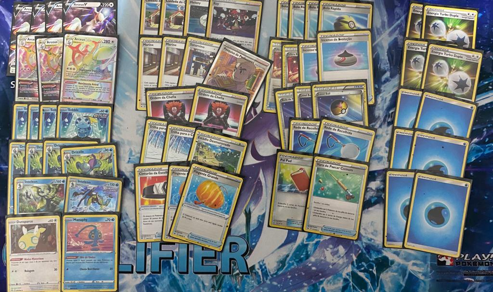

A Volta dos Mensais em BH

Fala pessoal,
Estou aqui para contar um pouco da minha jornada no primeiro mensal de 2022 em Belo Horizonte. Como é bom voltar a competir e rever todos amigos que fiz nesse jogo, a maioria deles estavam presente e foi bom sentir novamente o cenário se abraçando para jogar competitivamente. Depois de quase dois anos sem os mensais foi bacana ver a quantidade de players no torneio e ainda assim faltando um monte de rostos conhecidos que não conseguiram comparacer.
A Escolha Do Deck
Diferente do que costumo fazer em torneios, tive um total de quase 0 jogos jogados nas semanas. Foi uma semana apertada onde tive que viajar para o sul do país a trabalho e acabei sem tempo nenhum pra pensar em Pokémon TCG. Minha sorte que tive o Dyego pra me ajudar escolher o deck. Pode parecer bobagem, mas os mensais a galera dá uma fritadinha para tentar ser 'O MELHOR DE BH'.
Minha primeira opção era a mais óbvia e a que tinha mais jogado no online. Arceus Inteleon. Acredito que seja o deck mais versátil do metagame e ele consegue adatar muito bem. O único problema que com Estrelas Radiantes e a entrada de novos decks como Palkia, Darkrai e Samurott, acabei ficando um pouco com medo de como o deck se adaptaria para um formato que nem tinha começado pra valer ainda.
A segunda escolha era Arceus Malamar com Jolteon que barra habilidades de Pokémon água, minha ideia era ganhar no cansaço do pessoal e como imaginei um meta lotado de Inteleon (realmente estava cheio) seria uma boa opção.
Na noite anterior conversei com o Dyego sobre o que ele achava do Malamar VMax e nós chegamos a uma conclusão que o dano era muito baixo e isso poderia atrapalhar no midgame e lategame. Então, pensando nisso, na minha falta de treino com o deck e porque o Arceus Inteleon já estava no shield foi com ele que fui.
Esse foram as 60 cartas escolhidas. O que mais gostei sinceramente foi o 2º pingente grande que me fez vencer algumas partidas.
Report do Torneio
1ª Rodada vs Victor 'Kids' - Arceus Palkia
Partida dificil para o Arceus Puro, ele tem a capacidade dar um hit com o Palkia, enquanto tenho que ficar administrador meu banco para ser nocauteado rapidamente e ele pode fazer o setup como ele quer.
A primeira partida foi complicada, o deck dele fazia muita coisa de uma vez só, então mesmo que eu comece muito bem e ele mal, ele tem chances de voltar tanto com VStar do Arceus ou do Palkia. A primeira ele venceu de maneira relativamente fácil.
Fomos pra segunda e começar nessa partida faz total diferença, consegui fazer meu setup sem a necessidade de Sobble na mesa, administrei o dano que ele poderia dar, até que ficou Arceus vs Arceus. E nessa hora o Cuidado da Cheren fez total diferença, depois do segundo e pal pad ele resolveu conceder e partir pra terceira.
Faltava pouco tempo, ele começou muito forte e acabaria vencendo se não tivesse chamado os 3 turnos. Dei um Boss Order stall para segurar um Greninja Radiante dele e sabia que naquele momento ele não conseguia mais vencer.
Empatar na primeira rodada nunca é o ideal, mas devida toda pressão que o deck dele fazia no meu, achei um resultado super interessante.
0-0-12ª Rodada vs Thiago Marins - Darkrai
Nós tinhamos jogado no dia anterior e ele tinha feito 2-1 contra mim, mesmo eu usando outra variação de Arceus achei a match um pouco chata. Porque quem começa tem uma vantagem absurda. Portanto, quando ele ganhou a moeda e começou, senti que precisava arrumar algum plano pra vencer.
A primeira partida ele começou bem, só que determinado momento quando ele toma o Trilha para o Cume e você consegue tirar algumas energias do campo, o jogo começa a ficar previsível para o Arceus, e previsibilidade é o que o Arceus precisa, você podendo controlar o dano da mesa do oponente fica muito mais fácil para usar o Cuidado da Cheren e prevenir hits que nocautearia seu Pokémon.
Com isso na cabeça, ganhei a primera, ele começou novamente, fiz o Carga Triplica do Arceus V carregando outro do banco. Ele fez um turno muito forte, acredito que tenha sido um dos que melhores dele no torneio, só que ele acabou ficando com uma mão muito limitada, eu recuei o Arceus que tinha a Dupla, subi o com energia básica, fiz Boss + Trilha + Choice, naquele momento tirei 90 de dano na mesa dele, desacelerei seu jogo e foi só administrar a vitória.
1-0-13ª Rodada vs Lucas Marins - Regigigas
Não costumo dar muita sorte jogando contra o Marins Menor, mas dessa vez ele estava com um deck totalmente contra o meu. Regigigas acabou me surpreendendo nos vídeos que assisti na semana, mas contra Arceus Inteleon a match é muito complicada.
Descer Dusparce + Manaphy e dar Saturnino na hora correta é brutal. Sem contar que na segunda partida ele teve que descartar 3 estádios, então desci o Estádio Desmoronado e ele não conseguiu atacar por 3 turnos.
2-1-14ª Rodada vs Renato Christian - Mew
Dificil jogar contra um dos melhores do Brasil. Não gostei de ter pegado ele nesse momento, a sorte que nós dois podiamos perder ainda que na win and in ainda teriamos chances.
A primeira partida sentei, tomei uma água, fiz umas contas para pagar no mês, pensei no meu serviço, saudades da patroa, daria tempo de jantar e estaria no turno dele ainda.. No meu turno eu fiz o que todo jogador de Arceus odeia, energia e passo.. Cara, por isso que Mew vai ser forte até cair, o deck é muito opressor, se você dá sinais de fraqueza, ele vai te engolir com toda certeza! E foi o que aconteceu, foi easy demais pra ele.
Como ganhar do deck de Mew com Arceus então? Marnie + Trilha + reza brava. É assim que funciona. Fiz isso, mesmo não dando energia t1. Freie a aceleração dele e jogar no meu ritmo deixa as coisas mais simples. Ele não conseguiu dar um nocaute, eu voltei o Arceus pra mão e ele concedeu.
A terceira partida eu teria que jogar melhor e o deck também, porém nem um e nem outro deu certo. Ele jogou bem e fez o que tinha que fazer. Atropelou!
Acontece, perder para Mew é normal, o ruim é como você perde, perder sem jogar e com mãos zoadas acaba deixando um pouco frustado. A partida foi tão rápida que deu tempo pra respirar, comer uma pizza e concentrar para o win and in.
5ª Rodada vs Marcelo Junior - Mew
Me parece outro Mew no caminho, esse era um pouco mais chato, porque tinha a parte da imprevisibiliade nos Catcher que ele usava.
Marcelo ganhou a moeda, rodou super bem o deck, acertou tudo que deveria e naquele momento já deu algo do tipo: 'Deu ruim'. Ele fez o turno padrão e mágico do Mew e infelizmente não consegui responder.. nocauteou meu único Arceus e a mão estava tão ruim que preferi conceder para que minha moral voltasse.
A segunda comecei mas não como gostaria, falhei energia novamente no t1 e eu sabia que isso poderia ter me tirado do top. Ele respondeu bem e a sorte que ele matou somente um sobble, porque ele tinha dano para matar um Arceus mas acabou errando os catchers. No meu turno consegui responder muito bem com Drizzile para Melony, VStar do Arceus para energia de água + energia dupla, dei Bola Rápida na de água, comprei trilha, baixei energia e nocautei a Malloeta. Tirei 140 de dano dele, desacelerei o game e consegui ter um pouco de alivio no game.
A última partida foi bem complexa, ambos jogadores não começou muito bem, só que pelo menos ele conseguiu baixar alguns Pokémon no banco, só que não comprou tão bem. No meu turno fiz um dos piores que podia e pensei que tinha perdido. Liguei um pingente no Arceus e passei. Pensei que pelo menos iria fazer ele gastar recurso e acabou fazendo diferença. Ele partiu pra cima e teve que descartar muito mais coisas que tava esperando, comprou Energia de Fusão na draw do Genesect (ele me contou depois) que fez toda diferença. Ele nocauteou, a partida ficou tensa, consegui devolver e realmente a Trilha venceu a partida. Ele errou 2 Cramorizador que teria feito alguma diferença na partida. Só que ele já tinha gasto todos os Power Tablet e nessa hora eu sabia que tinha vencido, porque ele não daria mais nocaute no meus Arceus.
Bom jogo, Marcelão! Foi o melhor que tive no dia, com certeza!
3-1-1Top 8 vs Robert Almeida - Ice Rider
Era o primeiro torneio dele o que já é um mérito absurdo para um jogador novato, senti que ele estava um pouco nervoso e talvez isso possa ter atrapalhado um pouco suas tomadas de decisões. Antes da partida bati um papo com o Dyego e bolamos uma forma de vencer a partida, ele conseguiria retirar um pingente e dar um nocaute, caso eu conseguisse segurar o impeto teria chances. Outro plano era se começasse partisse pra cima caso o ínicio dele fosse ruim.
GANHEI NA MOEDA! Fiz a jogada clássica do Arceus de baixar energia e passar. Só que consegui baixar 2 Sobble na mesa, tava muito sólida! No turno dele ele só baixou Ice Rider com energia e passou. Ai começou a dar certo o que pensamos, Boss + Choice = Nocaute. Faço o do banco com 2 energias pra não tomar Starmie V. Ele repete a mesma jogada sem baixar o segundo Ice Rider, eu puxo novamente e ele concede.
A segunda foi mais complicada, só que tive o melhor starter no meu campeonato. Dupla, 2 sobble e 2 Arceus V. Foi absurdo. Nós fomos jogando, até que ele acertou Sucateador no meu pingente e depois deu choice. Começou na frente, só que o segundo era dificil dele responder. Fui dando Cheren, controlando minha mesa pra não tomar hit do Starmie. Fui pra 3 prêmios e ele 4. Matei uma Starmie e depois foi só puxar um single prize e vencer a partida.
Ter um plano formado e tentar adaptando de acordo com que as situações vão acontecendo é importantissimo. Eu sabia que não consegui ganhar na trocação do Ice Rider VMax.. é muito grande pro Arceus e meu dano é muito baixo perto dele. Só que pensando em uma forma de vencer e mesmo a partida sendo bem ruim, sempre tem uma chance, ainda mais se a sorte te ajuda um pouco.
VitóriaTop 4 vs Dyego Rathje - Arceus Box
Infelizmente cheguei onde poderia. Precisava ir embora para minha cidade e o ônibus saia em 40 minutos, o Thales e Christian ainda estavam jogando e não daria tempo. Concedi sem problema nenhum, porque cheguei onde me propus a chegar desde quando o mensal foi criado. Fiquei feliz com o resultado, mas não vou mentir que gostaria de ter jogado contra ele. Pra ser bom tem que jogar com os melhores. Ele é um dos melhores.
DerrotaAgradecimento
Gostaria de agradecer toda comunidade da TCMG que fez parte, muitos não conseguiram participar, mas foi bacana demais ver rostos novos no meio de tantos conhecidos.
Foi um torneio diferente pela despedida do Renato Christian, será nossa última partida por um bom tempo, mas sei que valeu a pena nossa caminhada e ainda faremos nosso Last Dance!
Parabenizar o Dyego que foi campeão, o Thales que foi super bem passando em primeiro no suiço, o casal Jamila e Tulio que foram, o Robert que é um cara maneirissimo e tem tudo pra crescer mais ainda, ao Alex que ressurgiu das cinzas para o top e TODO mundo que participou e que fez esse evento ser maneiro demais! Estava sentindo falta disso. Galera de Divi, obrigado pela presença!
A todos que não citei foi um prazer passar o dia com vocês, espero encontra-los novamente em Divinópolis e no mensal do mês que vem!
Até a próxima!